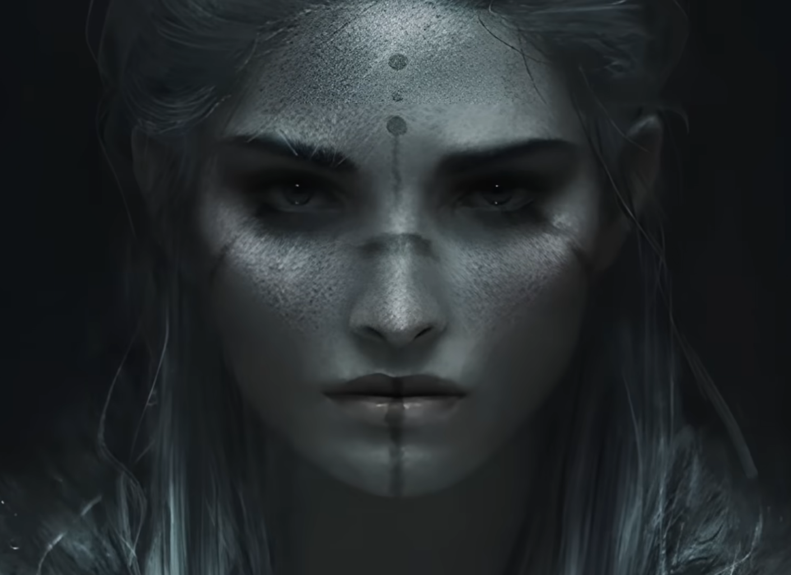
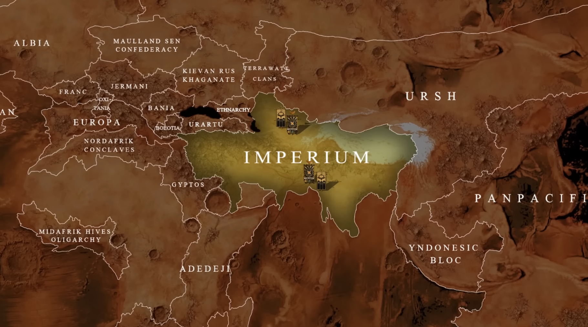
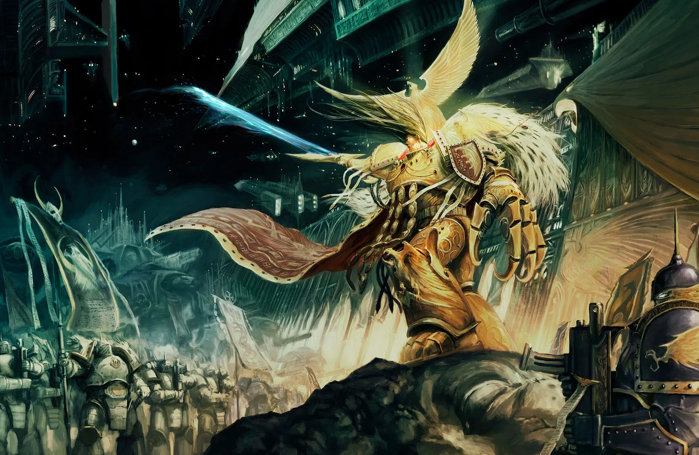
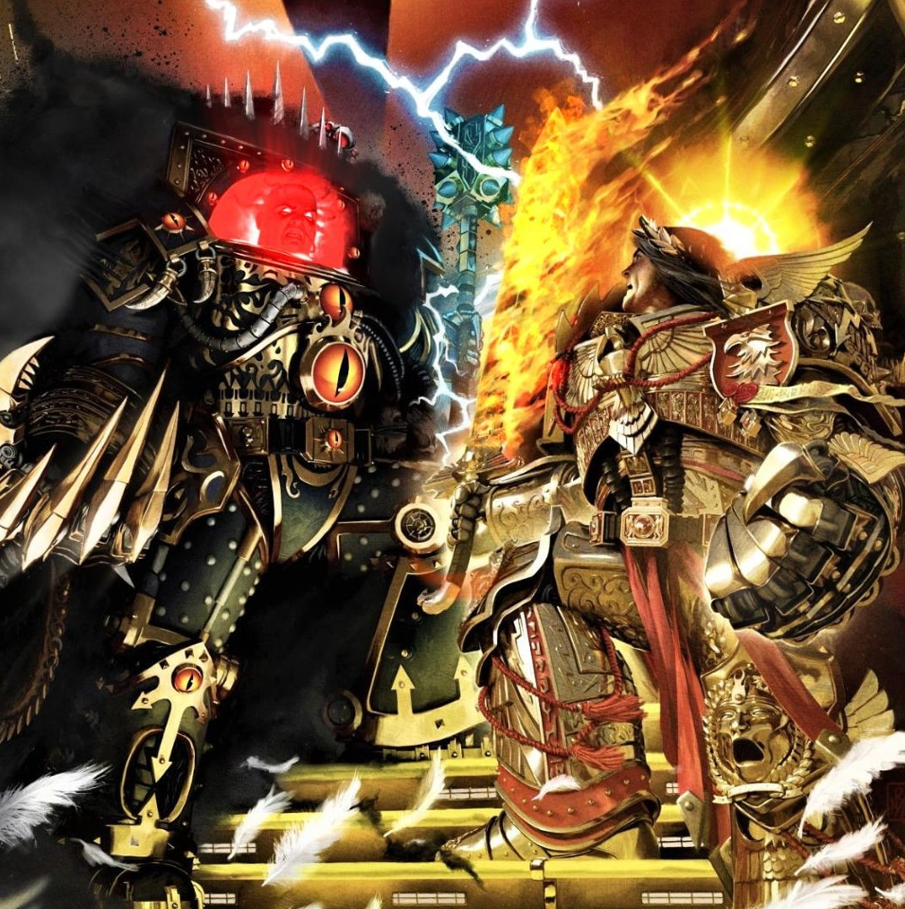
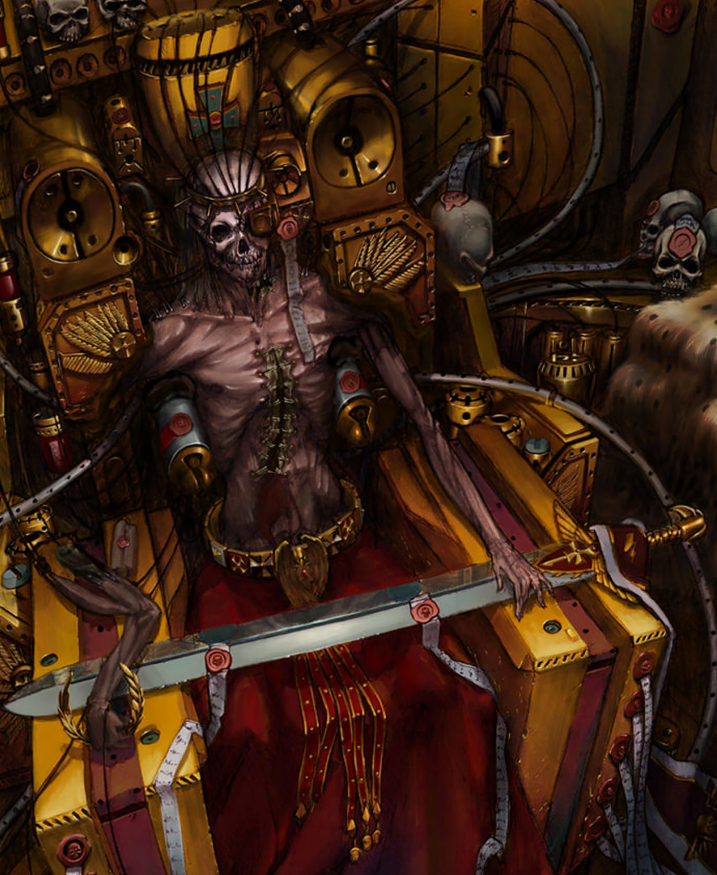

Dossier Sanctifié 000.M31
L’Empereur de l’Humanité n’est pas un souverain ordinaire. Il est le centre autour duquel l’Imperium a été bâti, le silence autour duquel des milliards de voix prient, et la présence mourante qui maintient encore l’espèce humaine au bord du gouffre.
Sa date de naissance exacte demeure inconnue. Les sources les plus anciennes, fragmentaires et souvent interdites, situent son apparition sur Terra plusieurs millénaires avant l’ère impériale. Certains récits le placent dès l’Antiquité terrestre, vers le VIIIe millénaire avant l’ancien calendrier. Aucune donnée ne peut être confirmée avec certitude.
Naissance
Bien avant l’Âge de la Technologie, avant les premiers empires stellaires humains, avant même que Terra ne porte le nom d’Humanité Unie, les archives interdites évoquent un événement enfoui sous des millénaires de censure impériale.
À cette époque reculée, l’humanité primitive était guidée dans l’ombre par des milliers de chamans et de psykers ancestraux. Ces êtres, capables de percevoir les courants immatériels du Warp, assuraient l’équilibre spirituel des tribus humaines et protégeaient l’espèce des entités prédatrices de l’Immaterium.

Mais au fil des siècles, quelque chose changea.
Le Warp devint plus violent.
Plus instable.
Plus conscient.
Les âmes humaines, autrefois capables de se réincarner après la mort, commencèrent à être dévorées dans l’Immaterium. Les chamans comprirent alors une vérité terrifiante : leur cycle de renaissance touchait à sa fin. Bientôt, l’humanité serait abandonnée sans gardien face aux horreurs du Warp.
Alors, dans le plus grand secret, ils prirent une décision impossible.
Des milliers de chamans se réunirent à travers Terra afin d’accomplir un rituel unique dans l’histoire humaine. Chacun mit volontairement fin à sa propre existence lors d’un suicide rituel massif, libérant simultanément son âme dans le Warp.

Au lieu de se disperser, leurs essences fusionnèrent.
De cette union naquit une conscience unique.
Une âme d’une puissance inimaginable.
Un être immortel destiné à guider l’humanité.
Ainsi serait né Celui que l’Imperium nommera plus tard :
L’Empereur de l’Humanité.
Reconquête de Terra
Lorsque l’Empereur se révéla à la fin de l’Âge des Luttes, Terra n’était plus le berceau glorieux de l’Humanité. C’était une ruine armée. Les océans étaient presque morts, les terres ravagées, les peuples divisés sous des seigneurs techno-barbares.

Il ne demanda pas l’unité. Il l’imposa.
Les Guerres d’Unification furent brutales. Les ennemis furent écrasés, absorbés ou effacés. Ceux qui pouvaient servir furent intégrés. Ceux qui menaçaient l’avenir furent détruits.
De cette violence naquit l’ordre impérial. Une vérité simple, terrible, impossible à discuter : l’Humanité ne survivrait qu’unie.
La Grande Croisade
La Grande Croisade fut l’expression la plus pure de la volonté de l’Empereur. Des milliers de vaisseaux quittèrent Terra. Des légions entières marchèrent sous son ordre. Les mondes humains perdus furent retrouvés, parfois sauvés, souvent soumis.

L’Empereur ne cherchait pas seulement à conquérir. Il voulait empêcher l’Humanité de retomber dans l’ignorance, la superstition et la dépendance au Warp. Il voulait une espèce maîtresse de son destin.
Mais son projet reposait sur des armes imparfaites : ses fils.
Les Primarques étaient puissants, brillants, terribles. Mais ils étaient aussi orgueilleux, blessés, jaloux, incomplets. En eux se trouvaient déjà les fractures qui allaient détruire le rêve impérial.
L'Hérésie
La trahison d’Horus ne fut pas seulement une rébellion militaire. Elle fut une mutilation spirituelle. Le fils préféré leva la main contre le père. Des légions conçues pour protéger l’Humanité devinrent ses bourreaux.

Durant l’Hérésie, l’Imperium apprit que ses plus grandes armes pouvaient devenir ses plus grands prédateurs. Les mondes brûlèrent. Les alliances se brisèrent. Le Chaos entra au cœur même du projet impérial.
Sur Terra, l’Empereur affronta l’échec de toute son œuvre. La rationalité fut noyée dans la foi, la science dans la sorcellerie, l’unité dans la trahison.
Le Trône d'Or

Après son combat contre Horus, l’Empereur fut placé sur le Trône d’Or. Ce dispositif ancien soutient son corps détruit et canalise son immense puissance psychique.
Le Trône n’est pas un symbole. C’est une prison, un tombeau et un moteur.
Par lui, l’Astronomican continue de briller. Sans cette lumière psychique, les Navigateurs seraient aveugles dans le Warp. Les flottes impériales se perdraient. Les mondes humains seraient isolés. L’Imperium se fragmenterait.
Chaque jour, d’innombrables sacrifices sont nécessaires pour maintenir ce système. La survie de l’Humanité repose sur une souffrance permanente, institutionnalisée, sacrée.
Dieu malgré lui
L’Empereur avait combattu la superstition. Il avait voulu libérer l’Humanité des dieux, des cultes et des mensonges métaphysiques.
Dix mille ans plus tard, il est adoré comme un dieu.
Ses temples couvrent des mondes entiers. Son nom est crié par les mourants. Ses statues dominent les cités. Ses prêtres condamnent au bûcher ceux qui doutent de sa divinité.
Voilà l’ironie centrale de l’Imperium. Il survit grâce à une foi que son fondateur aurait peut-être rejetée.
Nul ne sait ce que pense encore l’Empereur. Nul ne sait s’il pense encore comme un homme. Certains affirment qu’il protège toujours l’Humanité. D’autres murmurent qu’il n’est plus qu’une présence fragmentée, immense et souffrante.
Ces murmures suffisent à condamner un homme.
Conclusion archivistique
L’Empereur est à la fois origine, centre et plaie ouverte de l’Imperium. Tout remonte à lui. Tout dépend de lui. Tout pourrait s’effondrer avec lui.
Il a voulu unir l’Humanité par la raison, la guerre et la science. Son empire survit aujourd’hui par la foi, la peur et le sacrifice.
Il faut comprendre ceci. L’Empereur n’est pas seulement le maître de l’Imperium. Il en est la dernière barrière.
Et si cette barrière tombe, l’Humanité ne perdra pas seulement son souverain. Elle perdra la nuit elle-même.
Fin de l’extrait. Toute remise en question de la nature, de la survie ou de la divinité de l’Empereur est considérée comme hérésie majeure.